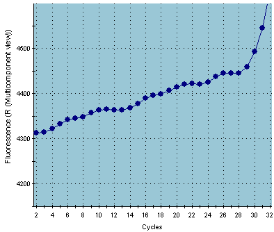

As was described in the first LRE paper (Rutledge and Stewart 2008), baseline drifting is one of the most acute anomalies encountered to date, which is best visualized by turning off baseline subtraction and zooming into the baseline region of a profile:
An example of serve baseline drifting

When such profiles are viewed in the LRE plot, a characteristic hook is generated in the earliest region of the plot:
LRE plot "hook" which is diagnostic of baseline
drift
This is a major concern, as baseline drifting generates large underestimations in Emax, which here is 87.6% for an amplicon known to generate Emax close to 100% in the absence of baseline drifting. This will in turn generate a large overestimation of target quantity.
Although the mechanism of baseline drifting is not clear, both primer- and sample-specific factors have been encountered. Such primers need to be replaced, whereas diluting the sample or re-purifying the RNA before reverse transcription have been found to reduce baseline drifting for some samples.
Rutledge RG, Stewart D (2008) A kinetic-based sigmoidal model for the polymerase chain reaction and its application to high-capacity absolute quantitative real-time PCR. BMC Biotechnol 8: 47